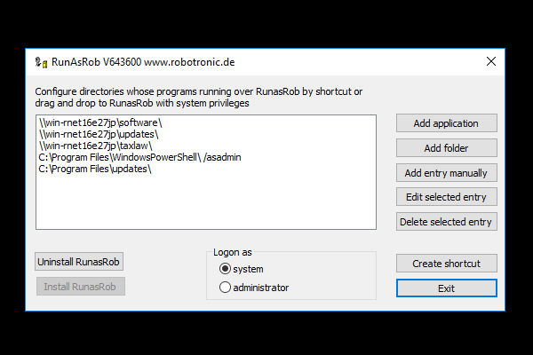
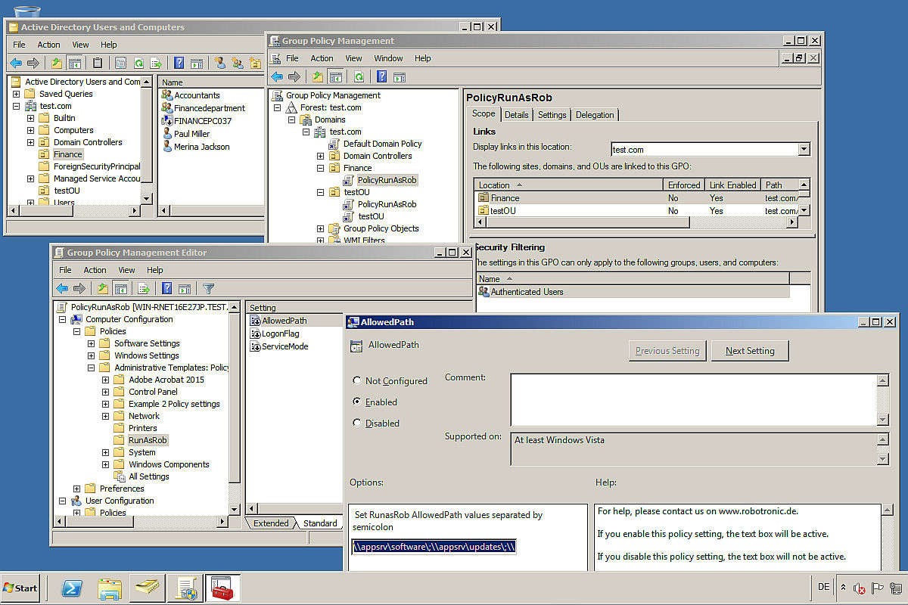
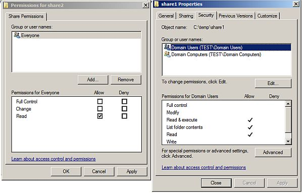
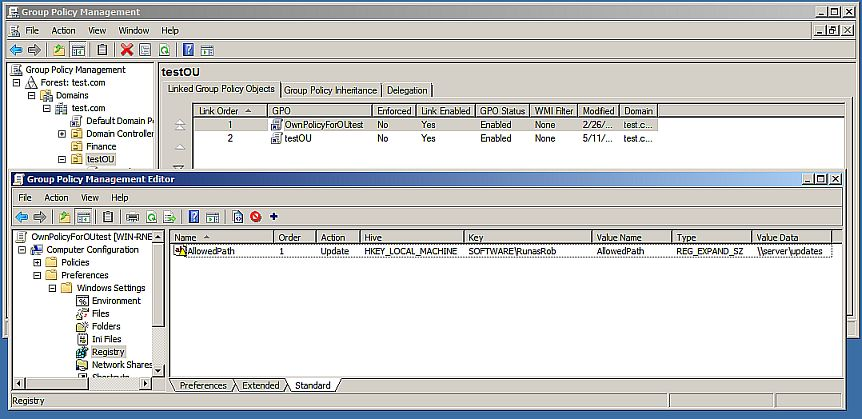
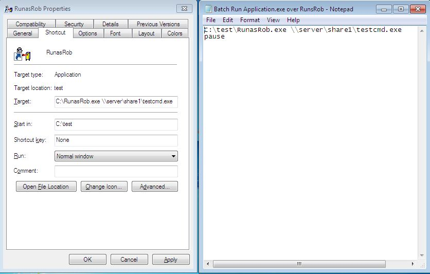

RunAsRob run as admin
RunAsRob run as admin
Starte Programme als Administrator oder mit dem Systemkonto unter Standardbenutzer
Starte Software als Admin oder Systemuser von einem Standard Benutzerkonto aus.
Konfiguriere Programme und Ordner, deren Inhalte mit Administrator - oder Systemrechte von einem eingeschränkten Benutzer gestartet werden dürfen.
-
Verteile Software oder Updates durch einfaches Kopieren der setup.exe in ein, mit Leserechte für Benutzer, bereitgestelltes Verzeichnis,
aus dem ein eingeschränkter Benutzer dann die darin liegende Software selbst installieren kann, wenn dieses Verzeichnis in RunAsAdmin autorisiert ist. -
Delegiere administrative Aufgaben an Standardbenutzer oder anderen spezielle Benutzergruppen,
durch die Autorisierung der Aufgabe in RunAsAdmin, kombiniert mit Verzeichnisrechte für diese Gruppe. - Ermögliche einem Standardbenutzer ein Programm zu starten, das Administratorrechte benötigt.
Wenn sie die einfache Arbeitsweise von RunAsAdmin verstehen,
können sie dieses Werkzeug effizient für unterschiedliche Ziele einsetzen,
bei einer einzelnen Workstation bis hin in einer großen Domain Umgebung.
RunAsAdmin.exe ist die grafische Benutzerschnittstelle, welche den Dienst RunAsRob installiert und die erlaubten Verzeichnisse in den Registrypfad von RunAsRob einträgt.
Wenn ein eingeschränkter Benutzer ein Programm über eine von RunAsAdmin erzeugte Verknüpfung startet oder per Drag and Drop auf RunAsRob.exe zieht,
dann vergleicht der Dienst von RunAsRob in seinen Registryeinträgen, ob diese Anwendung erlaubt ist.
Wenn sie erlaubt ist, dann startet der Dienst von RunAsRob dieses Programm unter dem system account oder als Administrator, je nachdem welche Logon Option in RunAsAdmin gesetzt wurde.
Standard Zugriffseinstellungen bei Microsoft Systemen verhindern das Manipulieren von Registryeinträge oder Dateien im standard Programmverzeichnis durch Standardbenutzer.
In Verbindung mit Verzeichnisrechte, OUs oder Gruppenrichtlinien kann RunAsAdmin zu einem vielseitigem Werkzeug werden.

Schnellanleitung run as administrator mit RunAsAdmin
Starte ein Programm als Administrator mit Systemrechte von einem Standardbenutzer aus.
- Entpacken Sie RunasRob.zip, starten Sie RunAsAdmin.exe und klicken Sie >> install RunasRob <<
- Wählen Sie über >> Add application << ein Programm aus, welches Sie mit Systemrechten starten wollen.
- Markieren Sie die Anwendung in der Listbox von RunasAdmin und erstellen Sie eine Verknüpfung durch >> Create shortcut <<
- Über diesen Shortcut kann der eingeschränkte Benutzer nun das gewählte Programm mit Systemrechte zu starten.
- Bei Bedarf können Sie den Zugriff auf eine bestimmte Gruppe Benutzer einschränken indem Sie die Ordnerrechte des Pfades setzen.
- Bei einer Netzwerk Freigabe muss das Computerkonto NTFS Leserechte auf die Freigabe haben. In einer Domain ist es die Gruppe Domain Computers.
- Videobeispiel
Starte ein Programm als Administrator von einem Standardbenutzer aus mit dem Profil des Standardbenutzer.
- Starten Sie RunAsAdmin.exe aus dem RunasRob Verzeichnis.
- Klicken Sie >> Install RunasRob << um den RunasRob Dienst zu installieren.
- Setzen sie die Option >> Logon as << auf administrator.
- Drücken Sie >> Add application << und wählen Sie das Programm welches autorisiert werden soll.
- Wählen Sie das Program inder Listbox aus und klicken Sie >> Create shortcut <<
- Über diesen Shortcut kann ein Standard Benutzer Account das Programm als Administrator ausführen .
-
Bevor die Anwendung startet wird der Benutzer nach seinen Anmeldeinformationen gefragt
damit diese Anwendung unter seinem eigenen Accout als Mitglied der lokalen Administratoren startet. - Videobeispiel
Über Verzeichnisrechte lesen, können sie bestimmte Benutzer und Computer in einer Domain berechtigen,
welche den erlaubten Order in RunAsAdmin für RunAsRob.exe nutzen dürfen.
Bitte beachten sie folgende Netzwerkregeln für das Verständnis
- der lokale Systemkonto ist in der Domain das Active Directory Computer Objekt mit dem Namen des Rechners.
- dass Netzwerk Zugriffsrechte für die Freigabe und NTFS Ordner Rechte untereinander unabhängig sind. Sie sollten deshalb immer beide Rechtesysteme eines freigegebenen Ordners configurieren und verwalten.
In folgendem Screenshot hab ich drei Verzeichnisse software, updates und taxlaw auf einem Netzwerkserver freigegeben
und entsprechende Verzeichnisrechte auf lesend gesetzt für die Gruppe >Region admin<, >Users<, >Accountants<
und allen Computer Clients über die Gruppe >Domain computers<.
Bei der Freigabe taxlaw beschränke ich den erlaubten Aufruf auf die Computergruppe >Accountants Computers<
Am Ende hab ich auf den Clients in RunAsAdmin diese Netzwerkpfade autorisiert.
Nun können Benutzer der jeweiligen Gruppe auf ihren Clients Programme aus diesen Verzeichnissen über RunAsRob mit System oder Administatorrechte starten.
Netzwerk Freigaberechte auf dem Server, in diesem Screenshot als Beispiel für den Ordner taxlaw

Verzeichnisrechte auf dem Server für die freigegebenen Ordner software, updates und taxlaw

Zum Schluss, autorisiere Netzwerkfreigaben am Clientcomputer in RunAsAdmin

Gespeicherte Konfiguration:
Hier sehen sie die Registry Werte von RunAsRob mit AllowedPath und LogonFlag, welche durch RunAsAdmin gesetzt werden und von RunAsRob überprüft wird, sobald eine Anwendung über RunAsRob starten soll.
Diese Werte können auch manuell oder über Gruppenrichtlinien gesetzt werden.

Mit Gruppenrichtlinien können sie die erlaubten Programme von RunAsAdmin zentral verwalten.
Sie können diese RunAsRob Gruppenrichtlinien Dateien admx und adml unter folgendem Link herunterladen RunAsRobPolicy.zip
Im Screenshot sehen sie eine OU Finance, welcher ich die PolicyRunAsRob zuwies und die Verzeichnisse >> \\appsrv\software\;\\appsrv\updates\;\\appsrv\taxlaw\ << auf den Computern dierser OU erlaubt habe.
Welche Benutzer oder Gruppe dieser Computer Anwendung daraus starten dürfen, löse ich über Verzeichnisrechte wie oben beschrieben.

Beispiel in einer Domain
Konfiguriere einen Ordnerpfad, aus welchem Programme mit Administratorrechte gestartet werden können von einem Standardbenutzer.
Über diesen Weg können Sie zentral in einer Domain einen Ordner bereitstellen für Anwendungen, Scripte, Updates, Patches,...,
die dann der eingeschränkte Benutzer selber installieren kann, sobald sie in diesem autorisierten Ordner liegen.
Der Domain Administrator muss dann nur noch bei Bedarf entsprechendes Programm in diesen Ordner kopieren und dem Anwender bescheid geben.
Sie können natürlich auch einen lokalen Programmpfad angeben, dessen Inhalt vom Standardbenutzer unter lokalen Administratorrechten gestartet werden kann.
Beschreibung:
-
Verwenden Sie einen lokalen Pfad oder geben Sie einen Ordner auf einem Server frei mit Leserechte für den Anwender und bei einer Serverfreigabe auch für das Computerkonto.
Sie können auch Ihre eigene Gruppe von Computer und/oder Benutzern anlegen, die für diesen Ordner berechtigt sind.
Über diesen Weg können Sie differenzierte Ausüfhrungsrechte einzelner Benutzer, Computer oder Gruppen festlegen.

-
Installieren und konfigurieren sie am Client die autorisierten Ordner oder Programme in der Registry
durch a) RunasAdmin.exe, b) zentrale Gruppenrichtlinien oder c)Kommandozeile
a) RunasAdmin
b) Zentrale Gruppenrichtlinien

c) Kommandozeile
installieren Sie RunasRob mit der Option /install und /allowedpath, gefolgt von den Ordnern und Programmen welche Sie erlauben möchten.
Bei mehreren Ordnern oder Programmen trennen Sie die Pfade mit einem Strichpunkt.
Im Beispiel unten erlauben Sie Programme im lokalen Pfad taxlaw, die Anwendung regedt32.exe und Programme im Serverpfad share1
>> runasrob.exe /install /allowedpath:C:\Program Files (x86)\taxlaw\;C:\windows\system32\regedt32.exe;\\server\share1\; <<

Eine weiterer optionaler Parameter ist /asservice (default) oder /asadmin
/asservice -> Die freigegebene Anwendung startet unter dem system account mit erhöhten Administratorrechten.
/asadmin -> Nach Eingabe der Anmeldedaten wird der Benutzer zum Mitiglied der lokalen Administratoren für diese Anwendung welche dann.unter seinem eigenen Account startet.
>> runasrob.exe /install /allowedpath:C:\Program Files (x86)\taxlaw\;C:\windows\system32\regedt32.exe;\\server\share1\; /asadmin <<

-
Konfiguration ist bereits fertig. Sie können im Registrypfad von RunasRob den Key mit den Pfaden sehen.
Diesen Key können Sie bei Bedarf auch manuell oder über zentrale Gruppenrichtlinien anpassen.
Auf 64 Bit Computer >> HKEY_LOCAL_MACHINE\SOFTWARE\Wow6432Node\RunasRob
Auf 32 Bit Computer >> HKEY_LOCAL_MACHINE\SOFTWARE\RunasRob
-
Nun kann ein Standardbenutzer Anwendungen aus diesen Pfaden mit Administratorrechte starten indem er
die Anwendung per Drag and Drop über RunasRob zieht
oder Sie erstellen ihm eine Verknüpfung oder Batchdatei wie
>> runasrob.exe \\server\share1\IhreAnwendung.exe <<
>> runasrob.exe c:\windows\system32\regedt32.exe <<
>> runasrob.exe c:\Program Files (x86)\taxlaw\update.exe <<

Weitere Videobeispiele:
Im Videobeispiel 1 wird eingeschränkten Benutzern erlaubt über RunAsRob Programme des Verzeichnisses system32 mit Systemrechten zu starten.
Im Videobeispiel 2 wird eingeschränkten Benutzern ermöglicht über RunasRob Programme aus einer Netzwerkfreigabe selbst zu installieren.
Im Videobeispiel 3 sehen sie, wie ein bestimmter Kreis von Benutzer für bestimmte Computer berechtigt werden kann
Software über RunasRob mit Administratorrechte zu starten die einem definierten Pfad liegt.
Kontakt:
Für Verbesserungsvorschläge, Fragen, spezielle Anforderungen oder Anpassungen schreiben sie uns.
runas@robotronic.de
Lizenz:
RunasRob ist nur für die private Verwendung frei.
Für Unternehmen und andere Organisationen gibt es auf den Organisationsnamen lizenzierte Versionen.
Bestellung RunasRob >>>
Download RunasRob >>>
Date: 2019-10-13
Datenschutz
Impressum